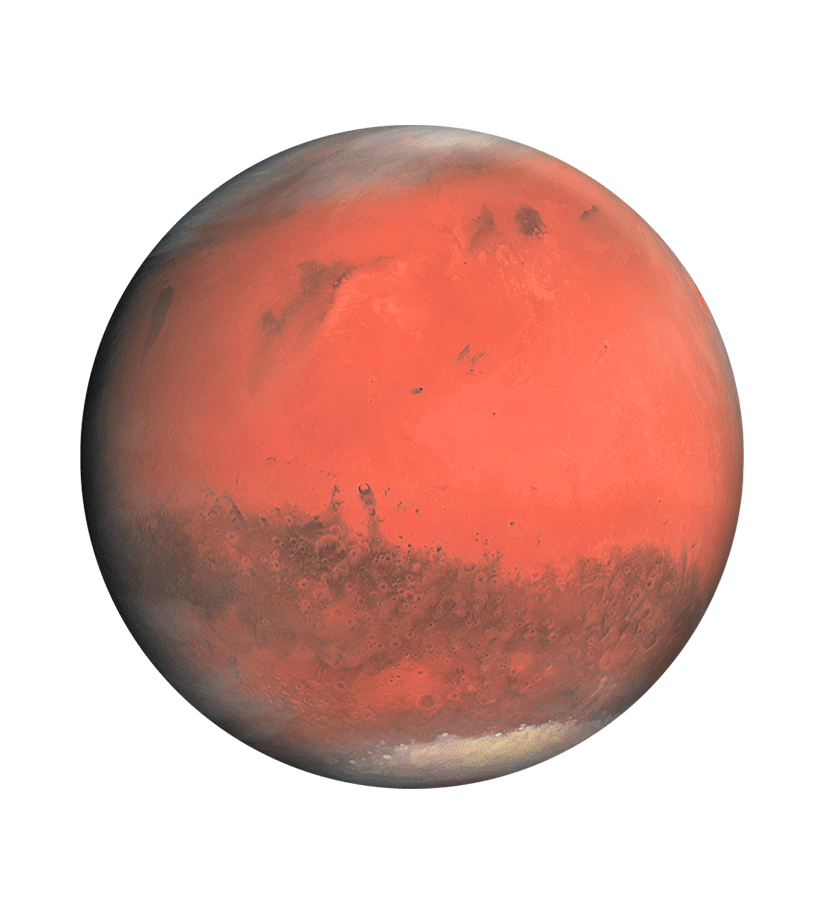

Water on other planets and moons
Earth is not the only planet with water on it.
Planets like Mars, Jupiter, and Saturn all have water on them in some shape or form.
The first planet i am going to cover is the planet Mars.
Mars

So far the only water confirmed on mars is ice.
But mars is thought to have liquid water under its surface witch could be a place for carbon based life could exist.
The first water found on mars was found at the sothern polar ice cap